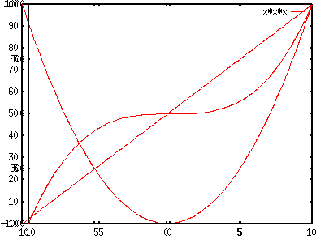
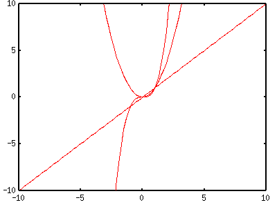
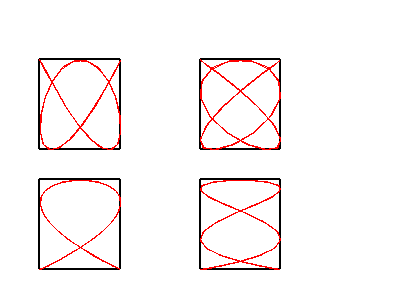

- not so Frequently Asked Questions -
update 2004/9/5
|
|
- not so Frequently Asked Questions - update 2004/9/5
|
|
not so FAQ |
About 2-Dimensional Plot (No.3)I want to draw several figures on one drawing.There are two methods to make a drawing which contains several figures. The first one is to use multiplot . The other way is to use the EPS format, then those files in this format are gathered by TeX or some drawing tools. Here we explain the multiplot command. With the command set multiplot you enter the multi-plot mode, and the gnuplot command prompt becomes multiplot> . In this mode a new figure overlaps the old one. The next example shows the overlapping plot of three functions, y=x, y=x*x, and y=x*x*x. gnuplot> set multiplot multiplot> plot x multiplot> plot x*x multiplot> plot x*x*x multiplot> set nomultiplot Gnuplot determines the range, tics, and size of figure automatically for each plotting, then the plot gets into a mess. Let's try to fix the X and Y ranges [-10:10], and erase the legends by no key command since they overlap. gnuplot> set xrange [-10:10] gnuplot> set yrange [-10:10] gnuplot> set nokey gnuplot> set multiplot multiplot> plot x multiplot> plot x*x multiplot> plot x*x*x multiplot> set nomultiplot Well, it's much better. But such thing can be done by usual plotting procedures. With the multiplot command you can draw several figures in one page by moving the origin of each figure. To do that, use set size and set origin commands. As an example of multiplot, four Lissajous' figures are plotted in one drawing. The Lissajous's figure can be drawn by a parametric representaion of two functions, x=sin(n*t) and y=sin(m*t). Here we draw the case of n=3,5 and m=2,4.
gnuplot> set parametric
dummy variable is t for curves, u/v for surfaces
gnuplot> set noxtic
gnuplot> set noytic
gnuplot> set nokey
gnuplot> set size square 0.3,0.3
gnuplot> set rmargin 0
gnuplot> set lmargin 0
gnuplot> set tmargin 0
gnuplot> set bmargin 0
gnuplot> set multiplot
multiplot> set origin 0.1,0.1
multiplot> plot sin(3*t),cos(2*t)
multiplot> set origin 0.1,0.5
multiplot> plot sin(3*t),cos(4*t)
multiplot> set origin 0.5,0.1
multiplot> plot sin(5*t),cos(2*t)
multiplot> set origin 0.5,0.5
multiplot> plot sin(5*t),cos(4*t)
multiplot> set nomultiplot

In order to make those figures the same size, the tics are erased by noxtic and noytic , and the four margins are set to be zero. Usually it is difficult to adjust the position of each figure appropriately. There is no easy way to determine the values of origin , and you have to do it by "trial-and-error". When your figure has tics and labels, the size of figure also depends on them. The adjustment of the positions becomes very severe for this case.  I want to draw a grid at minor tics.The command set grid makes grids at the major tics position. In order to make them at the minor tics : gnuplot> set mxtics 5 gnuplot> set mytics 5 gnuplot> set grid xtics ytics mxtics mytics This gives five grids at the minor tics between the major ones. You can specify the grid position by xtics ... mytics options of the set grid command. If set grid noxtics noytics mxtics mytics , the grids appear at the minor tics position only (but I guess no one likes such a graph though...) |